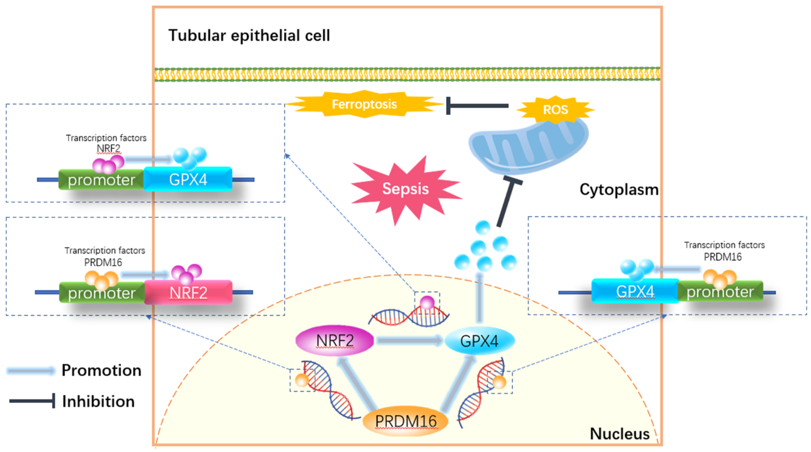

PRDM16 suppresses ferroptosis toprotect against sepsis-associated acute kidney injury bytargeting the NRF2/GPX4 axis
article
doi：10.1016/j.redox.2024.103417
PRDM 16通过靶向NRF 2/GPX 4轴来抑制铁死亡以预防脓毒症相关的急性肾损伤(Zheng 等 2024)
1. 研究背景与目的
研究背景：
脓毒症常伴随急性肾损伤（AKI）和多器官损伤，其机制涉及氧化应激、炎症反应和铁死亡（ferroptosis）。铁死亡是一种由脂质过氧化驱动的细胞死亡形式，与NRF2/GPX4通路密切相关。PRDM16（PR domain-containing protein 16）作为转录因子，可能通过调控NRF2/GPX4轴影响铁死亡，但其在脓毒症相关AKI中的作用尚未明确。研究目的：
探讨PRDM16是否通过调控NRF2/GPX4通路抑制铁死亡，从而缓解脓毒症诱导的AKI，并评估ADV-PRDM16（腺病毒载体过表达PRDM16）和PLGA-encapsulated formononetin（聚乳酸-羟基乙酸共聚物包裹的刺槐素）作为潜在治疗策略的效果。
2. 实验方法
动物模型：
使用盲肠结扎穿刺（CLP）法建立小鼠脓毒症模型，模拟多器官损伤，18小时后采集血液和肾脏组织进行分析。分子机制研究：
- PRDM16与NRF2的相互作用：
- 利用MoLo Tool预测PRDM16在NRF2启动子区域的结合位点（WT1和WT2）。
- 通过双荧光素酶报告基因实验、ChIP实验和RT-qPCR验证PRDM16与NRF2启动子的结合及其调控作用。
- 利用MoLo Tool预测PRDM16在NRF2启动子区域的结合位点（WT1和WT2）。
- 铁死亡相关指标检测：
- 测定肾组织中谷胱甘肽/氧化型谷胱甘肽（GSH/GSSG）比值、Fe²⁺水平、活性氧（DHE染色）及线粒体损伤（透射电镜）。
- 检测GPX4（谷胱甘肽过氧化物酶4）和NRF2的表达水平。
- 测定肾组织中谷胱甘肽/氧化型谷胱甘肽（GSH/GSSG）比值、Fe²⁺水平、活性氧（DHE染色）及线粒体损伤（透射电镜）。
- PRDM16与NRF2的相互作用：
治疗策略验证：
- ADV-PRDM16：腺病毒载体介导的PRDM16过表达。
- PLGA-encapsulated formononetin：纳米颗粒包裹的刺槐素，通过抗氧化和抗炎作用干预铁死亡。
- 评估两种策略对CLP诱导的AKI和多器官损伤的改善效果。
- ADV-PRDM16：腺病毒载体介导的PRDM16过表达。
3. 主要发现
- PRDM16通过NRF2/GPX4轴抑制铁死亡：
- 分子机制：
- PRDM16直接结合NRF2启动子区域的WT1位点，促进NRF2转录。
- NRF2上调GPX4表达，减少脂质过氧化，从而抑制铁死亡。
- PRDM16直接结合NRF2启动子区域的WT1位点，促进NRF2转录。
- 实验验证：
- PRDM16敲除（PT-PRDM16-KO）小鼠中，NRF2和GPX4表达下降，铁死亡标志物（Fe²⁺、活性氧、线粒体损伤）显著增加，肾损伤加重。
- PRDM16过表达则逆转上述效应，降低血清肌酐（Scr）和尿素氮（BUN）水平，改善肾组织病理学（H&E染色显示肾小管损伤减轻）。
- PRDM16敲除（PT-PRDM16-KO）小鼠中，NRF2和GPX4表达下降，铁死亡标志物（Fe²⁺、活性氧、线粒体损伤）显著增加，肾损伤加重。
- 分子机制：
- 治疗策略的有效性：
- ADV-PRDM16：
- 显著缓解CLP诱导的肾损伤和铁死亡，表现为GSH/GSSG比值升高、Fe²⁺水平降低、肾小管上皮细胞存活率提高。
- 显著缓解CLP诱导的肾损伤和铁死亡，表现为GSH/GSSG比值升高、Fe²⁺水平降低、肾小管上皮细胞存活率提高。
- PLGA-encapsulated formononetin：
- 通过抗氧化和抗炎作用，减少铁死亡相关标志物，改善多器官功能（包括肾脏、肝脏和肺部）。
- ADV-PRDM16：
- 关键数据：
- PRDM16敲除小鼠的肾小管损伤评分（K-T score）和线粒体损伤评分显著高于对照组。
- ADV-PRDM16处理组的H-score（免疫组化评分）显示NRF2和GPX4表达水平显著升高。
- 刺槐素纳米颗粒治疗组的DHE荧光强度（反映活性氧水平）和Fe²⁺含量显著降低。
- PRDM16敲除小鼠的肾小管损伤评分（K-T score）和线粒体损伤评分显著高于对照组。
4. 结论与意义
- 核心结论：
- PRDM16通过激活NRF2/GPX4通路抑制铁死亡，是脓毒症相关AKI的潜在治疗靶点。
- ADV-PRDM16和PLGA-encapsulated formononetin可有效缓解CLP诱导的多器官损伤，尤其是AKI。
- PRDM16通过激活NRF2/GPX4通路抑制铁死亡，是脓毒症相关AKI的潜在治疗靶点。

- 临床意义：
- 提供了针对脓毒症AKI的新治疗策略，为基于铁死亡调控的药物开发提供了理论依据。
- 纳米药物递送系统（如PLGA-encapsulated formononetin）可能提高治疗靶向性和生物利用度，具有转化潜力。
- 提供了针对脓毒症AKI的新治疗策略，为基于铁死亡调控的药物开发提供了理论依据。
5. 伦理与资金声明
- 伦理审批：
所有动物实验均符合中国湘雅二医院动物伦理委员会批准（编号2018065）。
- 资金支持：
国家自然科学基金（项目编号82370703）资助本研究。
6. 参考文献与补充数据
- 引用文献涵盖脓毒症AKI的流行病学、机制研究及纳米药物应用，支持本文的理论框架。
- 补充数据可通过DOI链接获取（https://doi.org/10.1016/j.redox.2024.103417），包括实验方法细节和原始数据。
参考文献
Zheng, Qiang, Jihong Xing, Xiaozhou Li, Xianming Tang, 和 Dongshan Zhang. 2024. 《PRDM16 suppresses ferroptosis to protect against sepsis-associated acute kidney injury by targeting the NRF2/GPX4 axis.》 Redox biology 78 (十二月): 103417. https://doi.org/10.1016/j.redox.2024.103417.